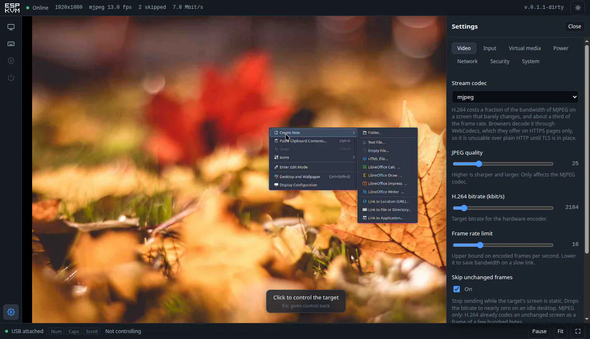
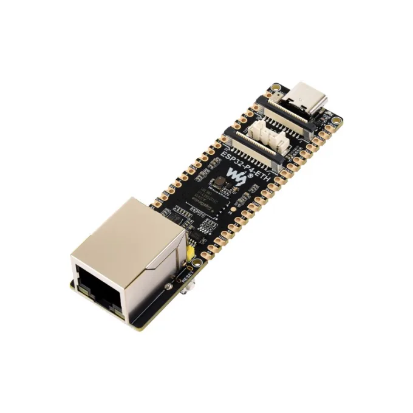
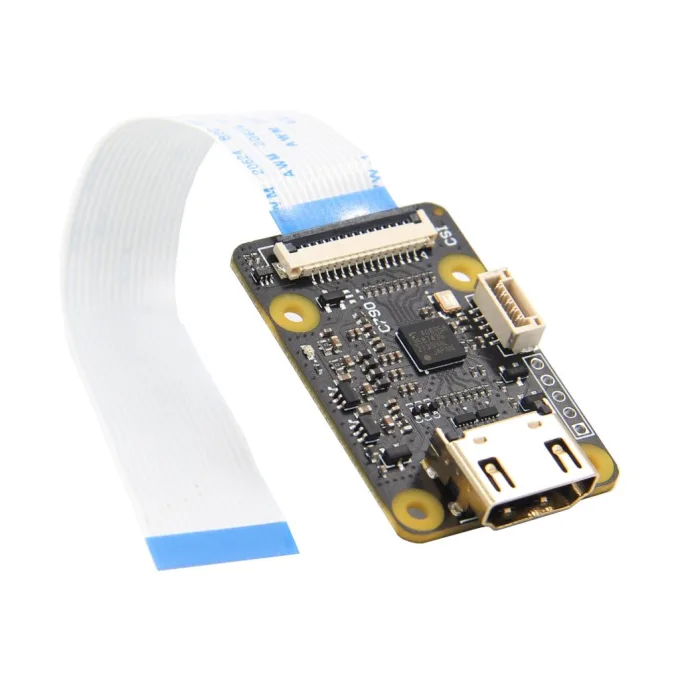

The machine, in a browser tab.
An IP-KVM built from an ESP32-P4 and a TC358743 HDMI bridge. The target machine’s screen, and a USB keyboard and mouse it cannot tell from real ones, over HTTPS — even when it has no operating system at all.

The point is to reach a machine that has no working operating system — a BIOS screen, a boot menu, a kernel that will not come up — from a device that costs a fraction of a commercial KVM-over-IP. It captures HDMI, presents itself over USB as a keyboard and mouse, hands the target a disk image to boot from, and serves the whole thing over HTTPS from a megabyte of firmware — the console inside it is 44 KB.
How it connects
Two cables to the target, one to the network. Nothing is installed on the target and nothing runs on it.
Nothing runs on the target machine — which is the point, since it may not be running anything at all.
What it does
What the firmware ships with. Anything the hardware cannot support, the device shows disabled with the reason — it does not pretend.
Follows the target
A machine switching from an 800×600 firmware screen to a 1080p desktop is followed without intervention.
Clicks land where aimed
An absolute USB pointer, so the target’s mouse acceleration cannot drift the cursor away from the button you meant.
MJPEG or H.264
Both encoded by hardware. H.264 costs a fraction of the bandwidth on a screen that barely changes.
Boot from a disk image
A rescue or live image, handed to the target as a USB drive it can boot from — from a microSD card, or a small one kept in the device’s own flash with no card at all.
Updates itself
Two app slots and automatic rollback: an image that fails to start returns the device to the one that worked.
HTTPS and a login
A certificate the device issues itself on first boot, and a password you can clear with the board button if you forget it.
Virtual media, honestly. The microSD is served read-only — this board cannot write it reliably — so images go on the card in a reader, formatted FAT32, up to 4 GB each. Reads run around 1.5 MB/s: quick for a rescue or minimal image, several minutes for a heavy graphical one. It is a known ESP32-P4 SD limitation, and the console tells you so. For the rescue case there is another option that sidesteps the card entirely: a small image (iPXE, memtest, a DOS floppy) kept in a 4 MB flash partition, served fast from memory and — because flash writes are reliable here — writable from the browser.
FAQ
How is this different from IPMI?
IPMI, the BMC chip built into server motherboards, manages a machine from the inside: real power control, internal sensors, POST codes, over a standard protocol. But it lives only on server-class hardware, and the full remote console is often behind a license.
ESP-KVM is external. It clips onto any machine with an HDMI output and a USB port, captures the physical video, and acts as its keyboard and mouse — bringing the remote console, virtual media and wake-on-LAN part of what a BMC does to hardware that has no BMC and never will: a desktop, a laptop, a mini-PC, an SBC, for about $40. It does not read the host’s internal sensors or switch its power rails electrically (ATX power control is on the roadmap). Think of it as closer to PiKVM than to IPMI: not a replacement for a BMC on a server, but the useful slice of one for everything that never had a BMC.
Measured, not estimated
Every number here came off the hardware, at 1080p. The ones that contradicted the documentation are written down in the hardware notes.
| MJPEG | H.264 | |
|---|---|---|
| Frame rate | 20 fps | 5–7 fps |
| Idle screen | 0 kbit/s | 170 kbit/s |
| Screen in motion | 8.5 Mbit/s | ~500 kbit/s |
| Chip temperature, full load | 46 °C in open air | |
So H.264 is not the faster option — it is the one that fits down a narrow link. Browsers decode it through WebCodecs, which they only offer on secure pages, which is one reason the device serves HTTPS.
These are this board’s numbers, not the ceiling
The frame rates above come from one particular ESP32-P4, revision v1.3, and the biggest cost in the H.264 path is something that revision forces on us. Below silicon revision 3.0 the CSI receiver cannot hand over YUV420 and the encoder will not accept RGB, so every frame takes a detour through the pixel accelerator to change colour space — 76 ms of the 145 ms a 1080p frame costs. On revision 3.0 and later that detour does not exist: the camera path can deliver what the encoder wants directly.
We have not run that, because we do not have that silicon. But the reason is specific and checkable — it is a revision test in Espressif’s own driver, quoted in the hardware notes — so a newer board should move H.264 from a bandwidth trade to a straight win. There is room on our side too: the conversion and the encode currently run one after the other in the same task when they could overlap.
Where it stands
An honest status board, the same one the device reports about itself.
| Video capture, resolution changes, MJPEG, H.264 | works |
| Keyboard, absolute and relative pointer, media keys, paste | works |
| HTTPS, login, physical password reset | works |
| Firmware updates over the network, with rollback | works |
| Thermal protection | works |
| Virtual media — boot the target from a disk image | works (card or on-flash) |
| Guessing the target’s OS from how it enumerates USB | works |
| User macros — replayable key sequences | works |
| Wake-on-LAN (no ATX wiring) | works |
| Static IP addressing, or DHCP | works |
| ATX power control | not yet |
| HDMI audio | not yet |
Not for the public internet. There is a login and there is TLS, but nothing here has been through a security review, and a device holding a keyboard on someone else’s machine is worth more to an attacker than most things on a network. Keep it on a network you trust, or behind a VPN.
What you need
Two boards and three cables. Both boards are off-the-shelf; any equivalent works, these are the ones this project is built and tested on.

Waveshare ESP32-P4-ETH
ESP32-P4 with 100M Ethernet, a Raspberry-Pi-compatible CSI connector, USB-C OTG and a microSD slot. Another ESP32-P4 board with Ethernet and the same CSI connector can run it too — the pins are set in menuconfig, not the code.
Waveshare product page →
Geekworm C790
A TC358743 HDMI → MIPI CSI-2 bridge that turns the target’s HDMI into a camera stream the ESP32-P4 can read. Any other TC358743 capture board should do just as well.
Geekworm wiki page →Cables: a CSI ribbon between the two boards, HDMI from the target, and USB-C from the board to the target. A microSD card if you want boot-from-image.
Getting started
The easiest way is flashing straight from the browser — Chrome and Edge can talk to the board over USB, and nothing needs installing. If you would rather use the command line, take the full-flash archive from the releases page, unpack it, and write it with esptool:
esptool --chip esp32p4 -b 921600 write-flash @flash_args
Then plug in Ethernet, HDMI from the target and USB to the target,
and open https://espkvm.local/. The browser will warn
about the certificate once — the device signed it itself, and
nothing else vouches for it. Sign in as admin / admin;
the console will not go any further until that password is changed.
Latest release release notes
Built on someone else’s work
This project exists because of Jonathan Rowny and
his p4kvm proof of
concept. He was the one who got an ESP32-P4 to pull frames off a
TC358743 at all, and put it in the open with a working
demonstration for anyone
to build on — this is that thing built on. Two pieces of his
work are reverse engineering no datasheet would have handed us: the
TC358743 bring-up sequence, and the direct programming of the
ESP32-P4’s MIPI_CSI_BRIDGE registers, which the
camera API does not expose. Both still carry this firmware; the
layers above them were rewritten. Thank you, Jonathan, for
publishing it.
Support and community
ESP-KVM is free and open source. If it saved you a trip to a dead machine you can buy me a coffee — entirely optional. And if you would rather help build it, issues, ideas and pull requests are just as welcome.
Ask a question Report a bug Contribute on GitHub
Built with the help of these contributors: